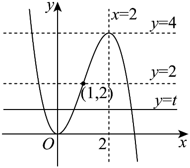

示例学校高二周测（9） Q10
题目
10．已知f(x)是定义在(-∞,0)∪(0,+∞)上的偶函数, 且当x>0时,f(x)=(x-1)lnx，则（ ）
A．f(1)=0
B．当x<0时，f(x)=(x+1)ln(-x)
C．x=-1是f(x)的极小值点
D．存在实数k，使得直线y=kx与y=f(x)的图象恰有1个公共点
答案与解析
10．AC【详解】对于选项A, 由题设f(1)=(1-1)ln1=0，A正确.
对于选项B，因为f(x)为偶函数，若x<0，则-x>0，故f(x)=f(-x)=(-x-1)ln(-x)=-(x+1)ln(-x)，B错误.
对于选项C，当x<0时，f(x)=-(x+1)ln(-x)，则f^'(x)=-ln(-x)-(1)/(x)-1，令g(x)=f^'(x)⇒g^'(x)=(1)/(x^2)-(1)/(x)=(1-x)/(x^2)>0，即g(x)=f^'(x)在(-∞,0)上单调递增，又f^'(-1)=-ln1+1-1=0，故当x∈(-∞,-1)时f^'(x)<0，f(x)在(-∞,-1)上单调递减；当x∈(-1,0)时f^'(x)>0，f(x)在(-1,0)上单调递增，故x=-1是f(x)的极小值点，C正确. 对于D选项, 由C分析，x→-∞或x→0^-时f(x)→+∞，且f(-1)=0，所以在(-∞,-1)、(-1,0)上f(x)∈(0,+∞)，又f(x)为偶函数，故在(0)、(1,+∞)上f(x)∈(0,+∞)，由图像可

知，直线y=kx与y=f(x)的图象恒有2个交点，D错误. 故选：AC结构化摘要
{
"question_id": "szzx2024g2week9_q010",
"answer": "AC",
"assets": [
{
"id": "img001",
"type": "image",
"rel_id": "rId8",
"source": "word/media/image2.png",
"path": "assets/szzx2024g2week9_q010_image_01.png"
}
],
"ole_objects": [],
"extraction": {
"source_paragraph_range": [
25,
29
],
"solution_paragraph_range": [
20,
22
],
"formula_count": 47,
"image_count": 1,
"ole_count": 0,
"quality_flags": [
"contains_images",
"contains_omml"
]
}
}